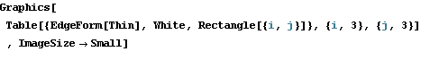
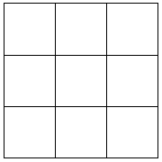
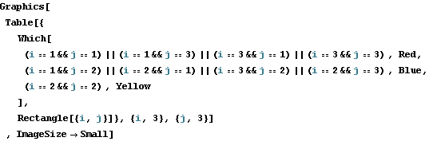
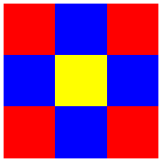
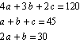

Magic Square of Order 3
Put 1, 2, 3, ..., 9 into different cells such that the sums of the 3 numbers of all rows, all columns, and both diagonals are the same.
The answer is well-known, but the derivation is not.
Here is the derivation.




Let a be the number in the yellow cell, 
b be the sum of all numbers in the blue cells,
and c be the sum of all numbers in the red cells.
Since the sum of all 9 numbers equals 45, the numbers in every row (column) have the sum 15.
Thus, we have
and hence a=5, b=c=20.
Now that a=5, we look for all pairs of numbers that have the sum 10.
There are 4 such pairs.
Find 3 numbers from 3 different pairs such that their sum is 15.
There are 4 this kind of tuples.
They are just the four edges of the square.
The above argument only works for order 3.